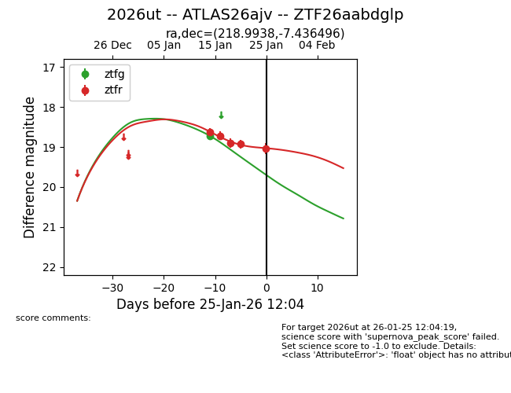
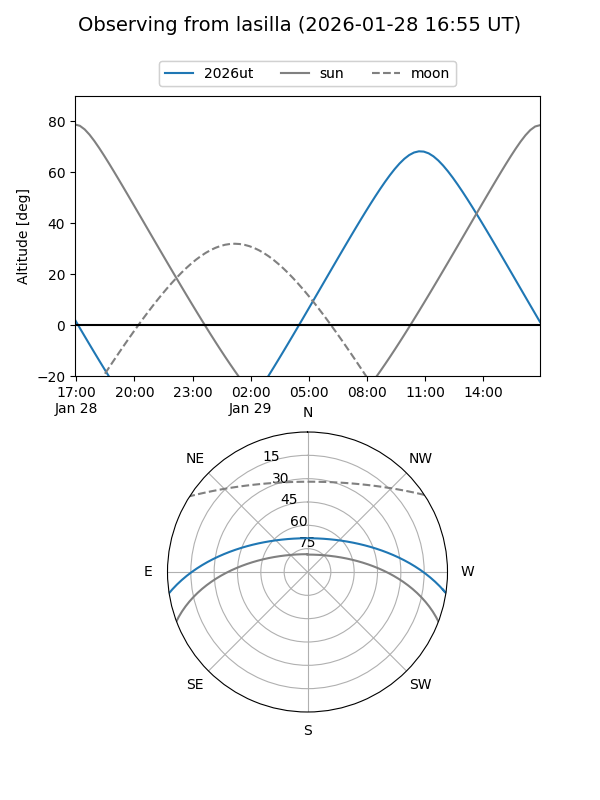
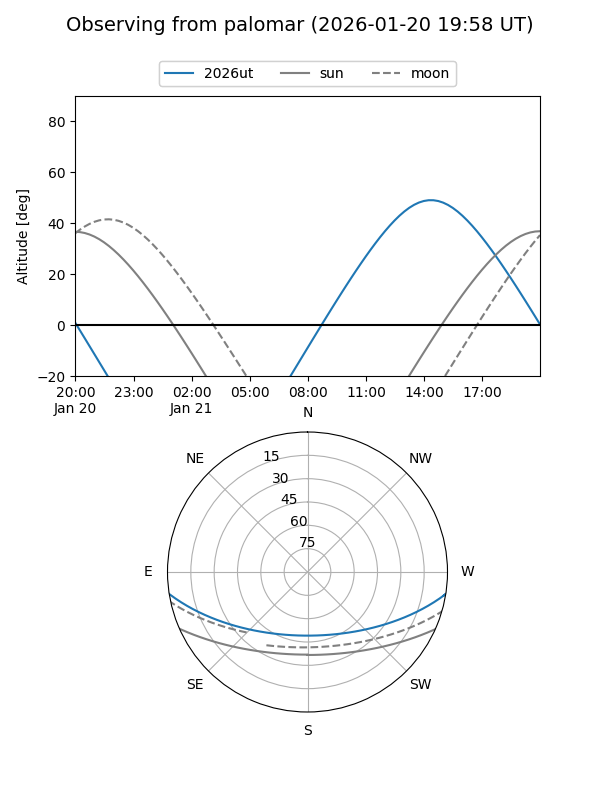
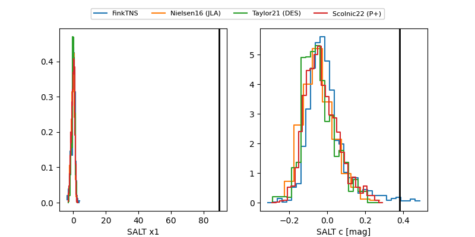

2026ut
Target 2026ut at 2026-01-18 22:20
Aliases and brokers:
FINK: link
Lasair: link
ALeRCE: link
TNS: link
YSE: link
alt names
ZTF26aabdglp (ztf,fink_ztf)
2026ut (tns,yse)
ATLAS26ajv (atlas)
Coordinates:
equatorial (ra, dec) = 218.9938,-7.43650
equatorial (HMS+DMS) = 14:35:58.52,-07:26:11.39
galactic (l, b) = (342.9002,+47.16053)
Flags:
Photometry:
last ztfg=18.72, ztfr=18.90
1 ztfg, 3 ztfr detections
Lightcurve

Visibility


Additional plots
